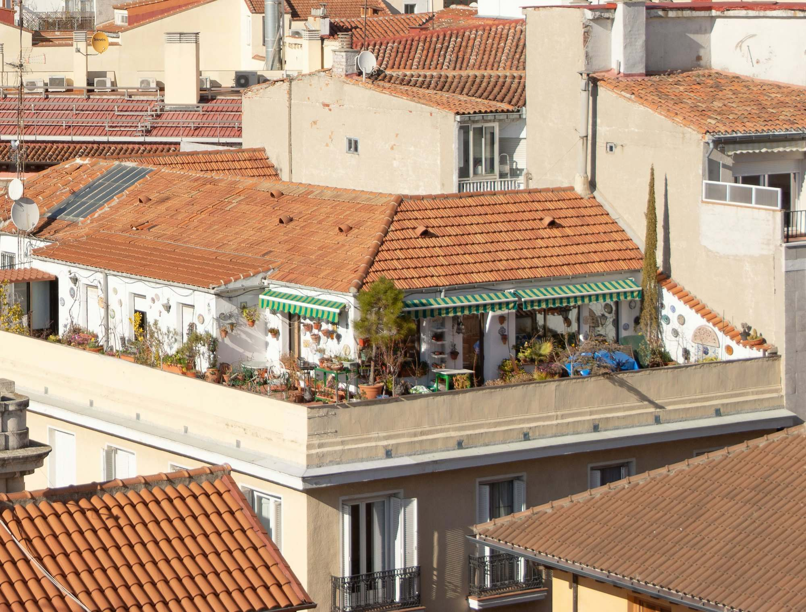
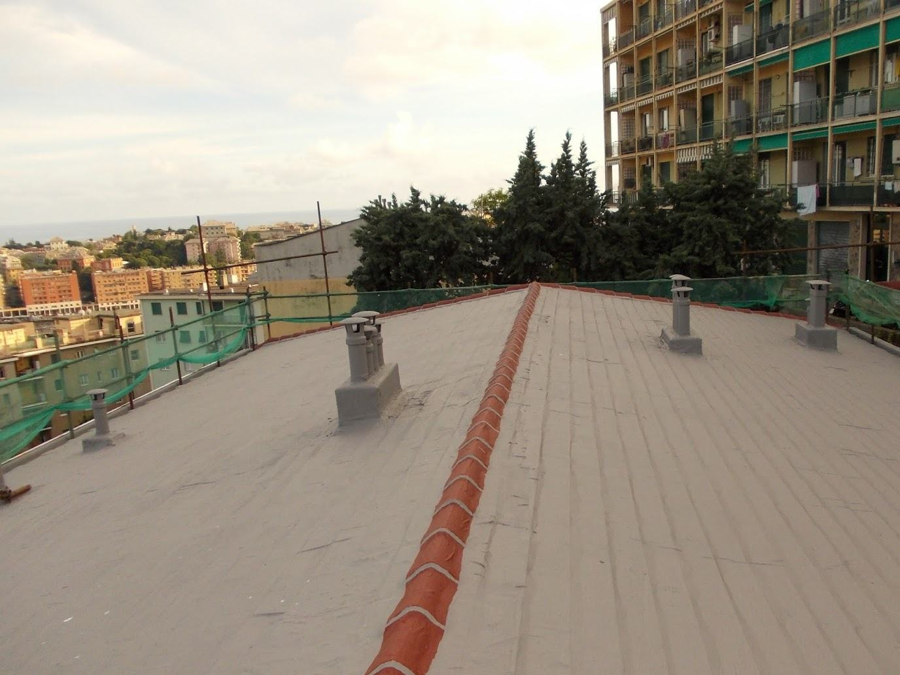
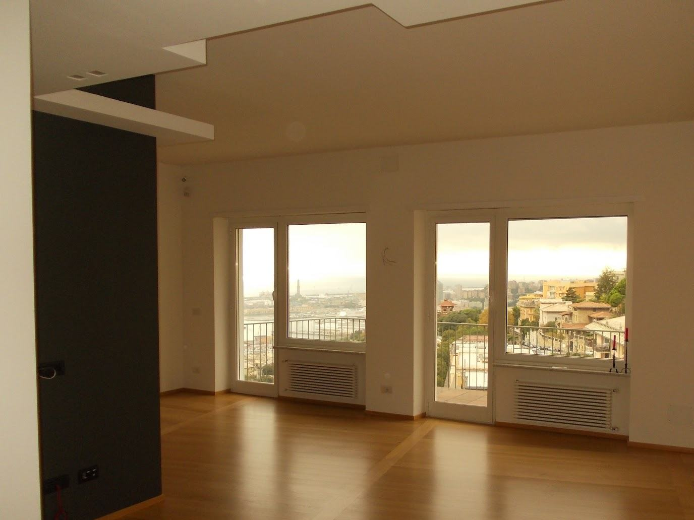
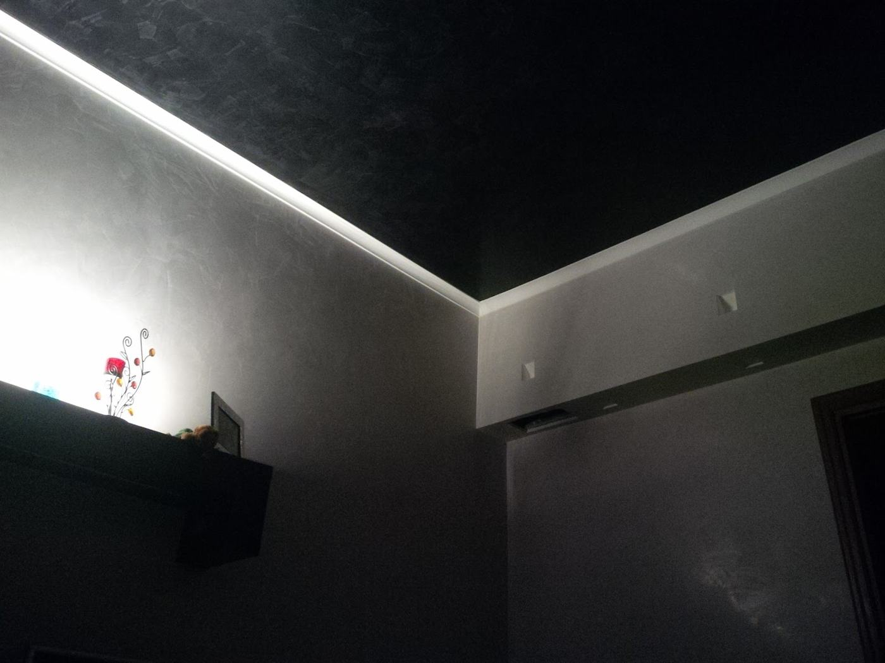
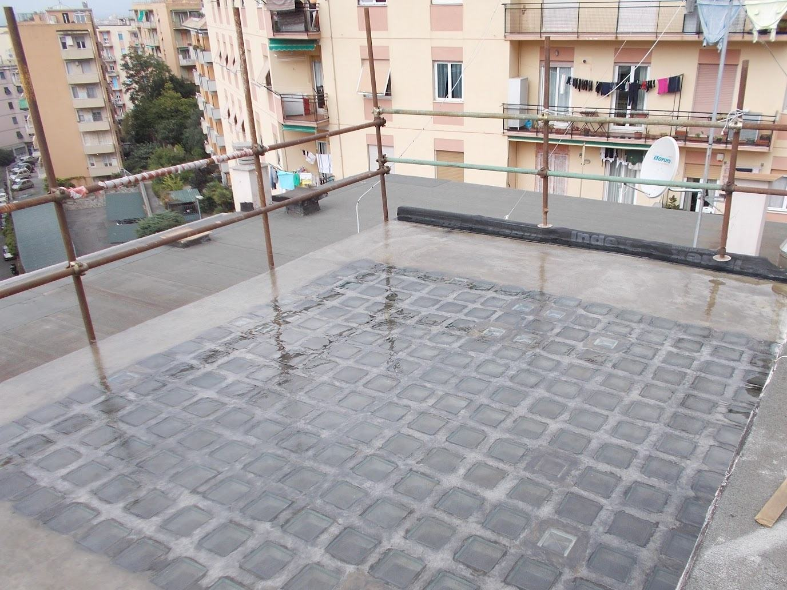
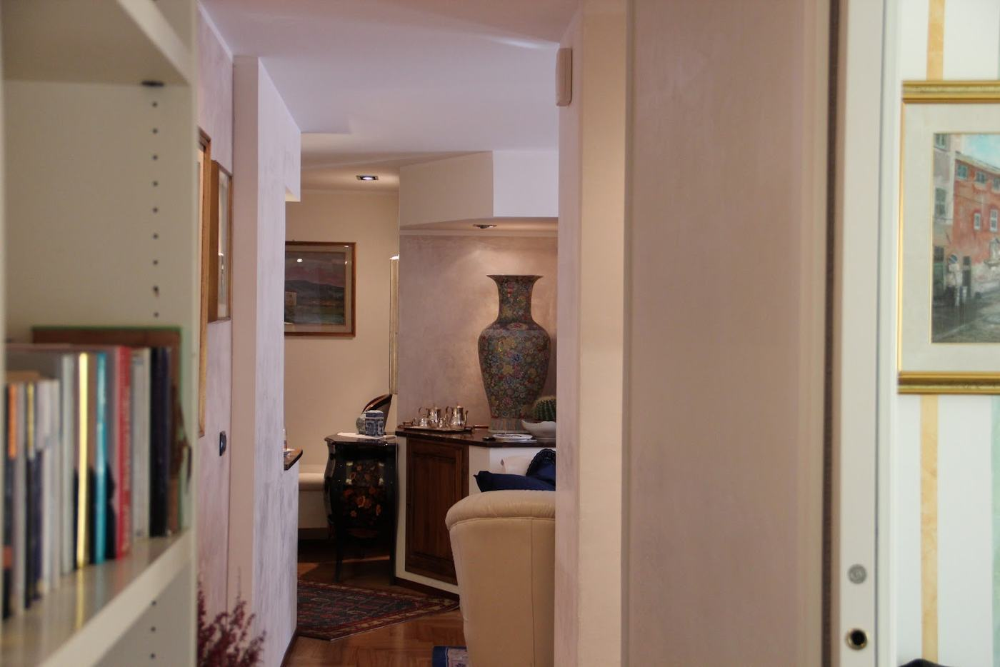
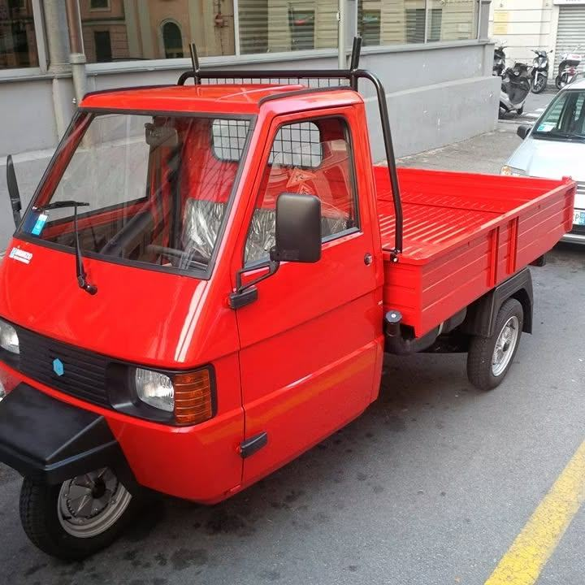

Impresa edile · Genova
Terrazzi, lastrici solari e case da rifare, a Genova.
Ristrutturazione di interni e rifacimento di terrazzi. E ogni altro intervento edile, da Corso Sardegna.
- 4,8su Google, 5 recensioni
- Terrazzie lastrici solari
- Interniristrutturazioni complete
- Corso Sardegna 3416142 Genova
01 · Lavori
Due specialità, ogni intervento edile.
-
01
Terrazzi e lastrici solari
Rifacimento completo: si toglie il vecchio, si rifanno pendenze e impermeabilizzazione, si posa il pavimento nuovo. Per chi ha l'acqua che entra in casa o nel condominio.

-
02
Ristrutturazione di interni
Appartamenti da rinnovare: tramezzi, intonaci, pavimenti, controsoffitti e finiture, fino alle chiavi.

-
03
Ogni tipo di intervento edile
Lavori piccoli e grandi, in casa e nelle parti comuni. Chiamate e spiegate cosa serve.

02 · Il terrazzo
Un terrazzo che non fa entrare l'acqua.
- 1Solaio
- 2Massetto delle pendenze
- 3Guaina impermeabile
- 4Pavimento per esterni
- 5Tutto insieme, sigillato
Schema indicativo. Materiali e spessori si decidono al sopralluogo.
03 · Cantieri
Dai nostri cantieri a Genova.



04 · L'impresa
Un'impresa artigiana, un nome e un numero.
ManuTech è l'impresa edile artigiana di Manuel Parisi, con sede in Corso Sardegna a Genova. Interni e terrazzi, dal sopralluogo alla fine del cantiere.
“Sempre molto precisi e collaborativi.”
Marina O., recensione Google
05 · Contatti
Piove in casa? Chiamate prima dell'inverno.
Mandate su WhatsApp una foto del terrazzo o della stanza. Poi fissiamo un sopralluogo e vi lasciamo il preventivo.
- Telefono e WhatsApp380 293 3192
- Emailimpresa.manutech@gmail.com
- SedeCorso Sardegna 34, 16142 Genova